What your lymphatic system does, what manual lymphatic drainage is, and when it’s a good fit.
Written by TAB Human Performance Center · October 2026
Welcome
Lymphatic drainage is having a moment online, and the claims have grown faster than the evidence. This guide explains what your lymphatic system does, what manual lymphatic drainage is, and when it’s a good fit.
Most of us never think about our lymphatic system until something swells. It works in the background every day, moving fluid and supporting the immune system. Manual lymphatic drainage (MLD) is a very light, slow, rhythmic hands-on technique designed to work with it.
At TAB, MLD is part of Massage & Bodywork. It’s often chosen for swelling after surgery once a surgeon has given the go-ahead, for a heavy, fluid-retentive feeling such as in late pregnancy, and for gentle recovery when your body needs less, not more.
This guide also covers when MLD isn’t the right choice, and when swelling needs a doctor rather than a massage.
In this guide
How it works
Every day, fluid seeps out of your smallest blood vessels to bathe your cells. Your lymphatic system collects what’s left over and returns it to your blood.1,2
Your smallest blood vessels let fluid out to bathe and feed your cells.
Tiny lymph vessels, many just under the skin, gather the extra fluid. Now it’s called lymph.
Larger vessels with one-way valves carry it toward the center of the body.
About 600 lymph nodes filter it along the way. They’re also where immune cells gather.1
Lymph rejoins your bloodstream through large veins near your collarbones.
Blood has the heart to pump it. Lymph has no single pump of its own, so it relies on several smaller forces working together.
The larger lymph vessels squeeze rhythmically on their own.2
Each time your muscles contract, they squeeze nearby lymph vessels.1
The pulse of nearby arteries adds a gentle push.1
Valves keep lymph moving in one direction only.1
“Exercise is a natural pump for the lymph system.”National Cancer Institute3
That’s why everyday movement matters so much (page 9). Your lymphatic system is also part of your immune system, and it carries fats absorbed from your gut into your blood.1
The technique
MLD is very light, slow, rhythmic hands-on work that follows the direction lymph naturally flows: toward the heart.
MLD was developed in the 1930s by Emil and Estrid Vodder, a Danish husband-and-wife team working in France. Today it’s taught in several schools of technique, and in medicine it’s used as one part of lymphedema care.3
Light and soothing, and much lighter than people expect. Slow, repeated strokes gently stretch the skin in the direction of flow. Many people find it deeply calming, and some drift toward sleep.
The smallest lymph vessels lie just beneath the skin. MLD works there, on the skin and just below it, rather than pressing into the muscles.
On TAB’s pressure scale
| Compared | Manual lymphatic drainage | Deep tissue massage |
|---|---|---|
| Pressure | Very light | Firm |
| Works on | The skin and just below it | The deeper layers of muscle and connective tissue |
| Pace | Slow, repeated, rhythmic strokes toward the heart | Slower, focused pressure on areas of tension |
| Often chosen for | Swelling after surgery, once cleared; feeling heavy; gentle recovery | Persistent tightness; recovery from heavy training or physical work |
| Feels like | Quiet and soothing; lighter than you expect | Firm and focused, but never a contest |
Like TAB’s other techniques, MLD can be a whole session or part of one. Tell us how you feel and what you’d like to be different, and we’ll choose and adjust as we go.
The honest picture
MLD has a real place in care. It also attracts claims the evidence doesn’t support. Here’s the difference.
Lymphedema is swelling from lymph that builds up, often after lymph nodes are removed or treated with radiation. MLD is one part of complete decongestive therapy, alongside compression bandaging, exercise and skin care, managed by a certified lymphedema therapist.3
A Cochrane review of trials in breast cancer–related lymphedema found MLD safe, and that it may add to the benefit of compression bandaging for reducing swelling. The trials were small, and the finding needs confirming.4
In those trials, 60 to 80 percent of people reported less pain and heaviness, whichever treatment they received.4 Side effects are uncommon; a few people report tiredness, headache or nausea.5
Your liver and kidneys clear waste. We know of no good evidence that MLD detoxes the body.
There’s no good evidence for either.
Your lymphatic system is part of your immune system, but there’s no good evidence that MLD strengthens immunity in healthy people.
It doesn’t. MLD is one part of ongoing lymphedema care, not the whole of it.3
Where MLD fits at TAB
Lighter, quieter work for when your body needs less, not more.
TAB offers MLD as gentle, supportive bodywork. If you have lymphedema, your lymphedema therapist and healthcare team lead your care: we’ll ask for clearance and coordinate with them. After surgery, we start once your surgeon has given the go-ahead.
Before you book
MLD is gentle, but it isn’t for everyone. Use this as a guide, and ask us if you’re not sure.
From TAB’s own guidance and Cleveland Clinic’s.5
Call your doctor promptly if one arm or leg swells, especially with pain or tenderness you can’t explain, warmth, or red or discolored skin. These can be signs of a blood clot.6 Red, hot, spreading skin with a fever can signal an infection.
Get emergency help for sudden difficulty breathing, chest pain that worsens with a deep breath or cough, a fast or irregular heartbeat, coughing up blood, or fainting.6
Please don’t email us health details. We’ll go over them privately, in person, when you arrive.
Your session
Quiet, slow and very light. Here’s how a first MLD appointment flows.
Book online at tabhumanperformance.com or call (810) 844-1283, and mention MLD. If you’ve had recent surgery or have lymphedema, tell us when you book so we can talk about clearance before your visit.
New clients complete a short intake form before the session, so none of your hands-on time is lost. Bring any notes from your surgeon or healthcare provider. Our client policies, including 24 hours’ notice to cancel or reschedule, are at tabhumanperformance.com/policies.
We’ll ask about the swelling or heaviness you’ve noticed, any surgery or treatment, and what your healthcare team has advised. Ask anything; this is where we agree on a plan together.
You’ll lie comfortably supported, usually on your back. MLD often begins near the neck and collarbones, where lymph rejoins the blood, then works outward in slow, repeated strokes. It’s so light that some people wonder whether anything is happening. That’s normal.
Get up slowly, drink water as you normally would, and take an easy walk if you can: movement helps lymph flow.3 You might not notice a change straight away.5 If you feel tired, or have a headache or nausea, tell us.
Myths and facts
Lymphatic drainage attracts more myths than most techniques. Here are the ones we hear most.
| You may have heard | What’s true |
|---|---|
| “Firmer pressure moves more fluid.” | MLD is very light by design.The smallest lymph vessels lie just beneath the skin, so the strokes gently stretch the skin rather than press into muscle. |
| “Lymphatic drainage detoxes your body.” | Your liver and kidneys clear waste.MLD supports the movement of fluid. We know of no good evidence that it detoxes the body. |
| “It melts fat and cellulite.” | There’s no good evidence for this.MLD isn’t a weight-loss or body-contouring treatment. |
| “It boosts your immune system.” | Not that we can show.Your lymphatic system is part of your immune system, but there’s no good evidence that MLD strengthens immunity in healthy people. |
| “MLD treats lymphedema on its own.” | It’s one part of a plan.Lymphedema care combines MLD with compression, exercise and skin care, managed by a certified lymphedema therapist.3 |
| “Everyone needs regular lymphatic drainage.” | Your lymphatic system works on its own, every day.MLD is an option when it’s a good fit, not a requirement for good health. Everyday movement does a lot of the work (page 9). |
Everyday support
You don’t need a session to help your lymphatic system. Everyday movement does a lot of the work.
Walking and everyday activity squeeze lymph vessels and keep lymph moving. The National Cancer Institute calls exercise “a natural pump for the lymph system.”3 If you’ve had surgery or have lymphedema, ask your care team which movement is right for you.
On long drives, flights or desk days, stand up and stretch your legs. The CDC advises moving your legs often on long trips, and flexing your ankles by pulling your toes toward you.6
If you’ve had lymph nodes removed or radiation, skin care is part of lymphedema care.3 Ask your care team what they recommend for you.
Swelling that’s new, on one side only, or not going down is worth a call to your healthcare provider. See page 6 for the signs that need prompt attention.
It depends on why you’re coming. After surgery, your surgeon’s advice sets the timing; for lymphedema, your lymphedema therapist’s plan does. Otherwise, we’ll suggest a rhythm that fits your goals and schedule, never more than you need.
Build ownership, not dependence
Movement is the lymphatic system’s everyday ally. When it genuinely supports your goals, MLD connects with Functional Strength and the rest of TAB’s services, and only then. Plenty of people simply book MLD, for as long as it helps.
Address tension, restrictions and recovery needs.
Improve the body’s ability to respond and recover.
Recalibrate effort, restoration and physical demand.
Checklist
Print it, save it, or skim it before your visit.
Sources and notes
This guide is general information, not medical advice, and it doesn’t replace advice from your healthcare provider. TAB Human Performance Center provides massage and bodywork within professional scope and works alongside your healthcare team; it does not diagnose or treat lymphedema or any other medical condition.
© 2026 TAB Human Performance Center. Published October 2026.

Not sure where to begin? Tell us what you’re working on, and we’ll point you to the right starting point.
Serving Livingston County